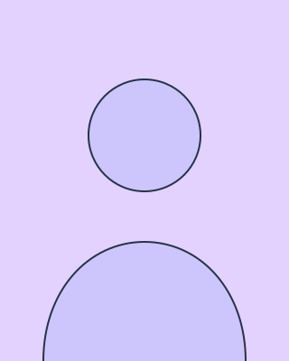

Your website has a new reader. Make sure it understands you.
Legible gets businesses found, understood and cited by ChatGPT, Gemini, Perplexity and AI search, by making your site as clear to machines as it is to people.
Single-origin coffee · Portland, OR
Small-batch coffee, roasted every Tuesday.
fig. 1 — the same page, read twice
Asked“best single-origin coffee roaster near Portland?”
AI answerHollis & Pine roasts single-origin beans in small batches every Tuesday in Portland. Bags start at $18, and customers rate it 4.8 stars.
source: hollisandpine.example
Search used to return links. Now it returns answers.
When someone asks an assistant who to hire, where to go or what to buy, it doesn’t hand them a page of links. It reads the web, decides what it believes, and replies in a few sentences.
If it can’t make sense of your site, it doesn’t say so. It paraphrases a competitor whose site it could read.
A person sees
- A beautiful product photo
- A friendly headline
- A button that says “Learn more”
A model sees
- img — no alt, ignored
- h1 — no entity, no claim
- a — “learn more” about what?
Legible makes sure both readers leave with the same, correct picture of who you are and what you do.
Four ways to be read correctly.
-
AI Visibility Audit
How you show up across ChatGPT, Gemini, Perplexity and AI search today, and who gets cited instead of you.
-
Machine-Readable Foundations
Schema and JSON-LD, semantic structure and crawl access, so machines can parse what people already understand. Plus supporting files such as
llms.txt. -
Answer-Ready Content
Restructuring your pages into the clear, citable claims that language models retrieve and quote.
-
Brand Signal Monitoring
Tracking how AI describes you over time, and fixing the source when the description drifts.
Also: Internal AI Readiness
Helping your own team adopt AI tools well: practical enablement, shared guidelines and workflows that hold up after we leave. More about Internal AI Readiness
Three ways to start.
-
Free AI snapshot
A first look at how ChatGPT, Gemini and Perplexity describe your business today.
- Price
- Free
- Timeline
- PLACEHOLDER_TIMELINE_SNAPSHOT
-
AI visibility audit
How you show up across ChatGPT, Gemini, Perplexity and AI search today, and who gets cited instead of you.
- Price
- from PLACEHOLDER_PRICE_AUDIT
- Timeline
- PLACEHOLDER_TIMELINE_AUDIT
-
Monitoring retainer
Tracking how AI describes you over time, and fixing the source when the description drifts.
- Price
- from PLACEHOLDER_PRICE_MONITORING
- Term
- PLACEHOLDER_TIMELINE_MONITORING
A method you can watch work.
-
Read
We ask the assistants your customers use about you, and map exactly what they say and who they cite instead.
-
Restructure
We rebuild key pages around clear entities and citable claims, with schema and semantic HTML.
-
Signal
We make the facts that matter, like what you do, where, for whom and at what price, consistent everywhere AI looks.
-
Monitor
We keep asking. When an assistant drifts, misquotes or forgets you, we catch it and correct the source.
How we measure it.
We ask a fixed set of questions, the same way each time, across ChatGPT, Perplexity, Gemini and Google AI Overviews. Then we track what comes back.
- Mention rate
- The share of answers that name you.
- Citation rate
- The share of answers that link to or cite your site.
- AI referral traffic
- Visits that come from AI assistants, from your own analytics.
- Accuracy
- Whether what they say about you is correct.
This page is optimized too.
Don’t take our word for it. View source.
- Semantic landmarks and a single, clear
h1 Organization,WebSite,ServiceandFAQPagestructured data- A
robots.txtthat welcomes AI crawlers, plus a sitemap - Self-hosted fonts, no cookies, and only cookieless analytics, when enabled
- Plus an
llms.txtfor the models that read one
Aggarwal et al., “GEO: Generative Engine Optimization,” KDD 2024, found adding citations, quotations and statistics made pages up to 40% more visible in AI answers.
Pilot results publishing soon.
{
"@context": "https://schema.org",
"@graph": [
{
"@type": "Organization",
"@id": "https://example.com/#org",
"name": "Legible",
"url": "https://example.com/",
"logo": "https://example.com/assets/favicon.svg",
"email": "PLACEHOLDER_CONTACT_EMAIL",
"description": "A studio that makes websites readable by AI assistants and answer engines, so businesses get found, understood and accurately cited.",
"knowsAbout": ["Answer engine optimization", "Generative engine optimization", "Structured data"],
"areaServed": "PLACEHOLDER_AREA_SERVED",
"sameAs": ["https://www.linkedin.com/company/PLACEHOLDER_COMPANY_LINKEDIN"],
"founder": {
"@type": "Person",
"@id": "https://example.com/#founder",
"name": "PLACEHOLDER_FOUNDER_NAME",
"jobTitle": "PLACEHOLDER_FOUNDER_ROLE",
"image": "https://example.com/assets/founder-placeholder.svg",
"sameAs": ["https://www.linkedin.com/in/PLACEHOLDER_FOUNDER_LINKEDIN"]
}
},
{
"@type": "WebSite",
"@id": "https://example.com/#website",
"url": "https://example.com/",
"name": "Legible",
"inLanguage": "en",
"publisher": { "@id": "https://example.com/#org" }
},
{
"@type": "Service",
"@id": "https://example.com/ai-visibility-audit.html#service",
"url": "https://example.com/ai-visibility-audit.html",
"name": "AI Visibility Audit",
"serviceType": "AI visibility audit",
"description": "How a business shows up across ChatGPT, Gemini, Perplexity and AI search today, and who gets cited instead.",
"provider": { "@id": "https://example.com/#org" }
},
{
"@type": "Service",
"@id": "https://example.com/machine-readable-foundations.html#service",
"url": "https://example.com/machine-readable-foundations.html",
"name": "Machine-Readable Foundations",
"serviceType": "Structured data and technical AI optimization",
"description": "Schema and JSON-LD, semantic structure and crawl access, plus supporting files such as llms.txt.",
"provider": { "@id": "https://example.com/#org" }
},
{
"@type": "Service",
"@id": "https://example.com/answer-ready-content.html#service",
"url": "https://example.com/answer-ready-content.html",
"name": "Answer-Ready Content",
"serviceType": "Content restructuring for AI answers",
"description": "Restructuring pages into the clear, citable claims that language models retrieve.",
"provider": { "@id": "https://example.com/#org" }
},
{
"@type": "Service",
"@id": "https://example.com/brand-signal-monitoring.html#service",
"url": "https://example.com/brand-signal-monitoring.html",
"name": "Brand Signal Monitoring",
"serviceType": "AI brand monitoring",
"description": "Tracking how AI describes a business over time, and fixing drift at the source.",
"provider": { "@id": "https://example.com/#org" }
},
{
"@type": "Service",
"@id": "https://example.com/internal-ai-readiness.html#service",
"url": "https://example.com/internal-ai-readiness.html",
"name": "Internal AI Readiness",
"serviceType": "AI enablement and adoption",
"description": "Helping teams adopt AI tools well: practical enablement, shared guidelines and workflows.",
"provider": { "@id": "https://example.com/#org" }
}
]
}
Who is behind Legible.

Questions, answered.
Is this just SEO?
They overlap: both need a site that machines can crawl and parse. The difference is the reader. Search used to return links. Now it returns answers, and an assistant that can’t make sense of your site paraphrases a competitor whose site it could read.
Can you guarantee we’ll be cited?
No. The assistants decide what they cite, and nobody outside them can promise a place in their answers. We improve the odds by making your site clear to them, and we measure what they say about you over time.
How long until we see results?
PLACEHOLDER_FAQ_TIME_TO_RESULTS
Do I need a new website?
No. We work with the site you have, and rebuild key pages rather than the whole site.
Be the answer.
Find out how ChatGPT, Gemini and Perplexity describe your business today, and what it would take to be the one they recommend.
The form isn’t connected yet; please email PLACEHOLDER_CONTACT_EMAIL.
Prefer email? PLACEHOLDER_CONTACT_EMAIL